Propozycje wygenerowane AI (rastrowe)
01. Wordmark Split REKOMENDOWANY - MINIMAL
Podział SIŁ (granat) + KA (pomarańcz). Czysty, nowoczesny, bardzo czytelny w małym rozmiarze.
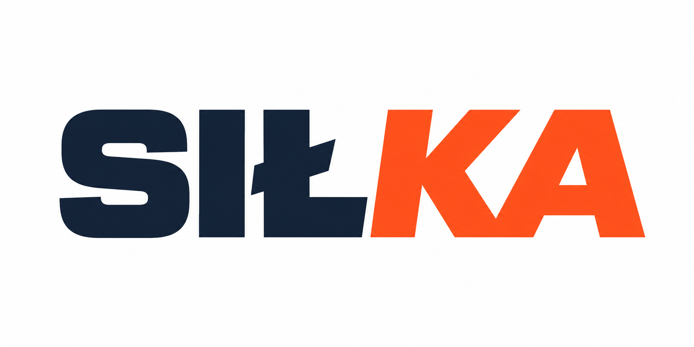
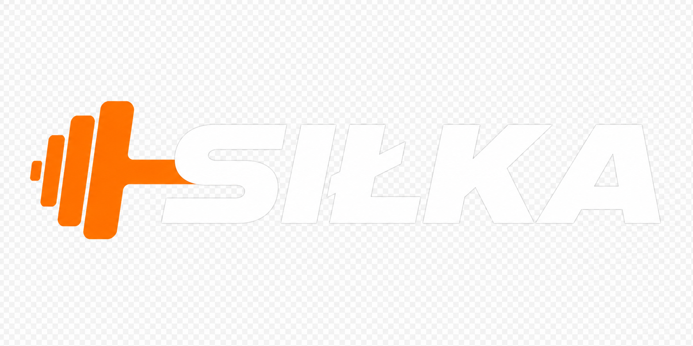
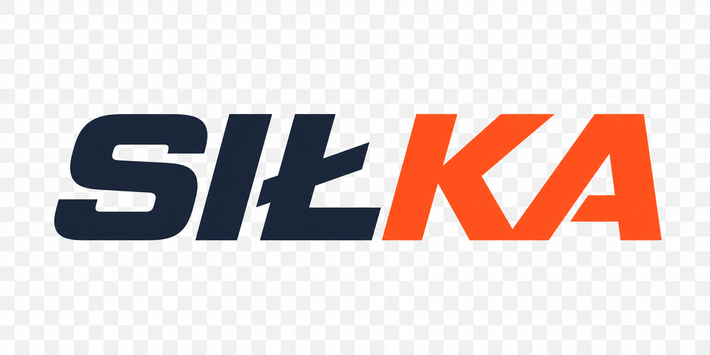
02. Icon + Wordmark NAJLEPSZY DO HEADERA
Hantle jako ikona + SIŁKA. Najmocniej komunikuje siłownię. Idealny na ciemne tło headera.
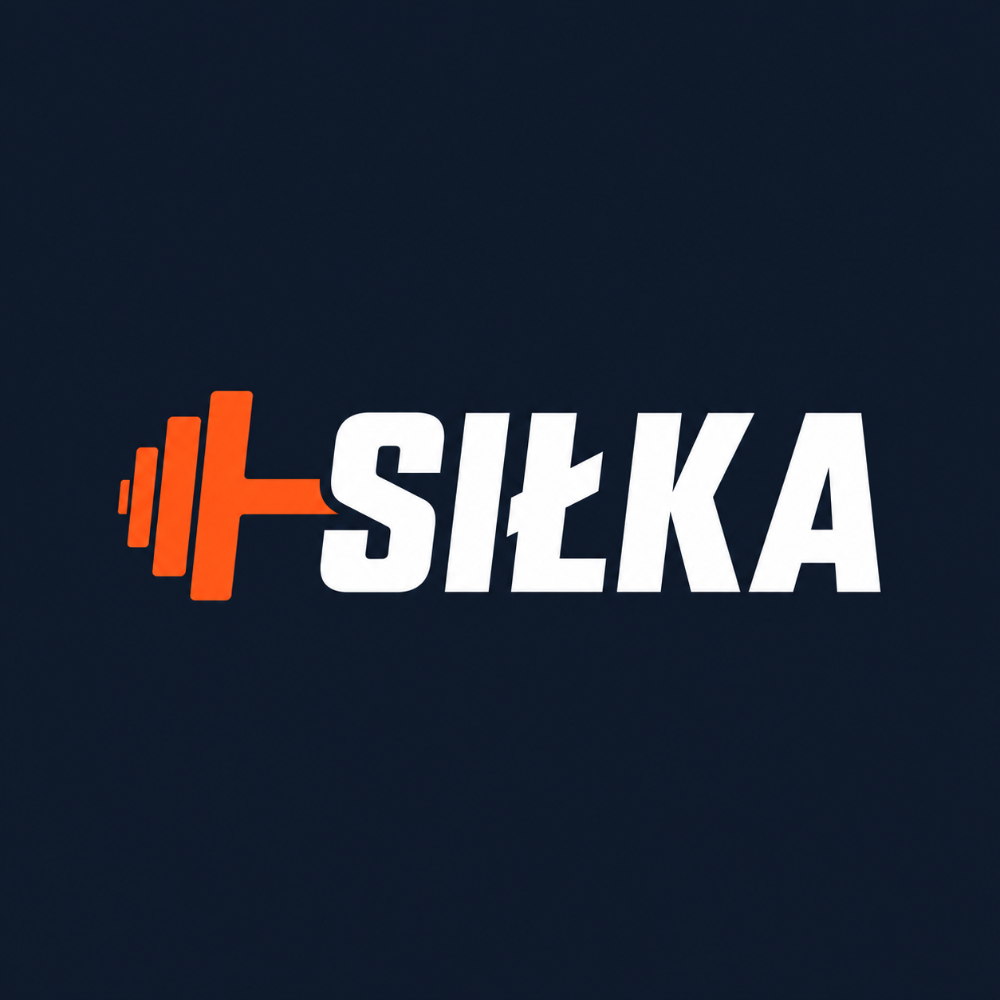
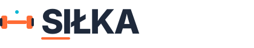
03. Badge SIŁKA 24 EWOLUCJA SFC
Bezpośrednia ewolucja starego logo SFC 24 - ten sam kształt, nowe kolory. Zachowuje ciągłość marki.
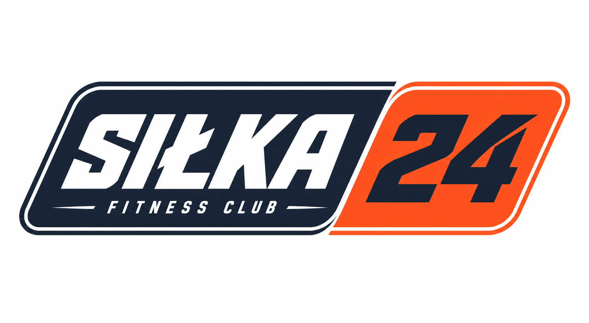
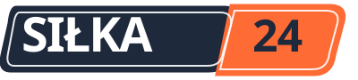
04. Lowercase Friendly
Małe litery "siłka" - bardziej przystępne, młodzieżowe, ale wciąż mocne dzięki kolorom.
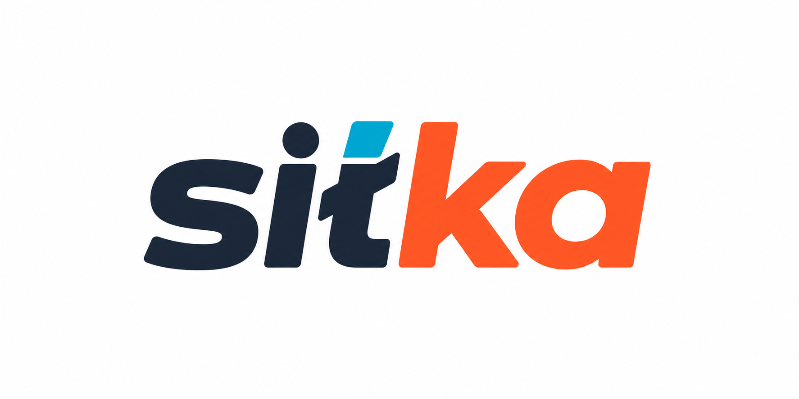
Wersje wektorowe SVG (gotowe do wdrożenia)
Wordmark - dark / light
Najprostszy, najlżejszy, skalowalny
Main - z hantlą
Rekomendowany jako główny
Favicon / Ikona S
Do social media, favicon, app icon
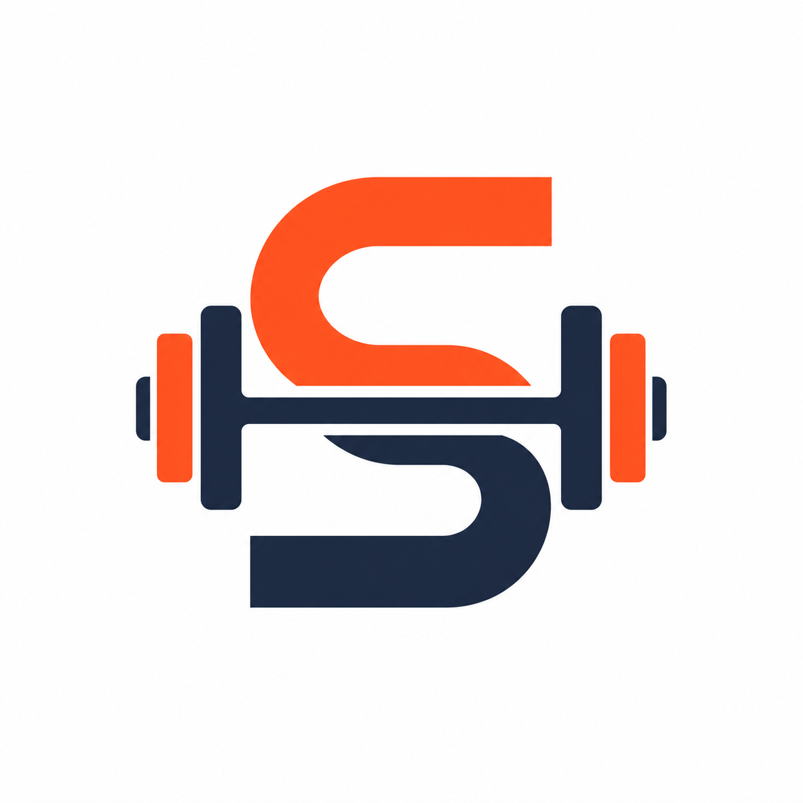
Podgląd w headerze strony
Jak wygląda w prawdziwym menu
Wdrożone pliki produkcyjne (nowe)
Produkcyjne SVG – header
assets/img/logo.svg – używane w top-menu
Favicon + OG + Social
Nowe favicon, OG cover, social square
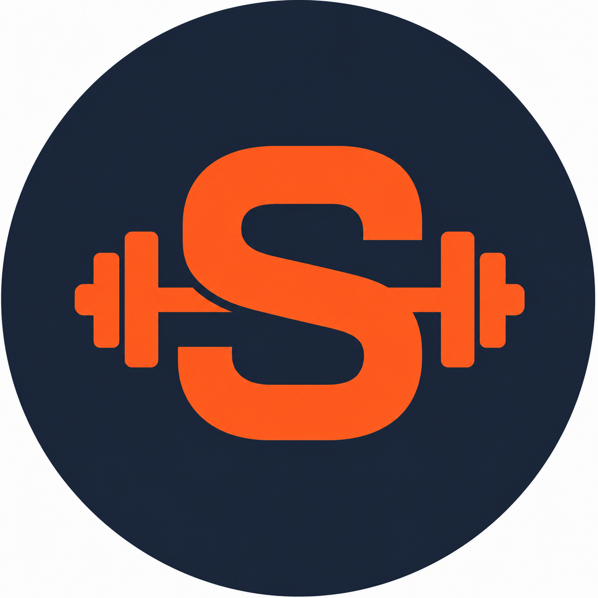
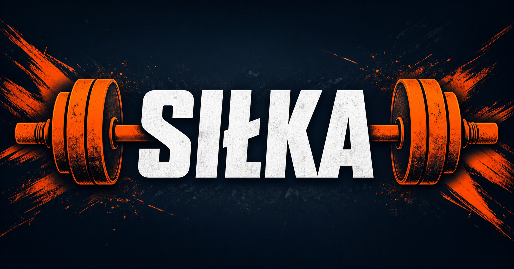
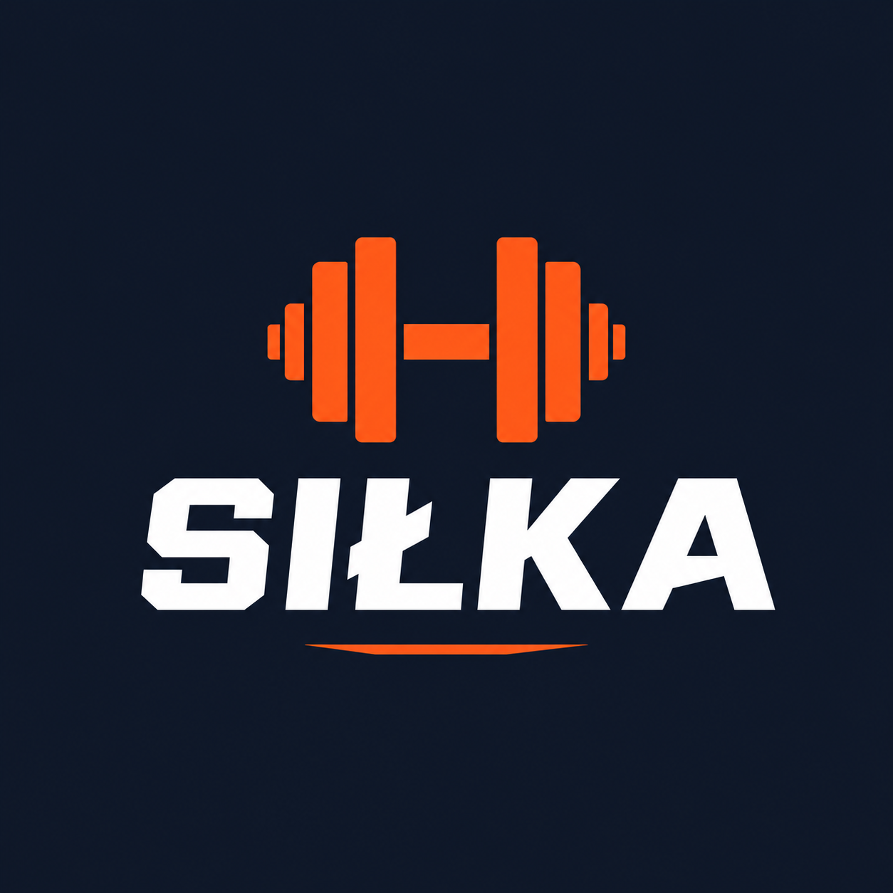
Rekomendacja wdrożenia
Dla marki siłka proponuję system 2 logo:
- Główne (header):
assets/img/logo.svg— biała SIŁKA + pomarańczowa hantla na granatowym tle #1E293B. Mocno siłowniane, czytelne, pasuje do CTA #FF6B35. Już wdrożone! - Alternatywne (jasne tło):
assets/img/logo-light.svg— SIŁ w #1E293B, KA w #FF6B35 + hantla. - Minimal (małe rozmiary, favicon):
assets/img/logo-icon.svg+favicon.ico– ikona S + hantla. - Badge 24: jeśli chcesz zachować "24" w nazwie, użyj
logo-silka-badge.svg— ewolucja starego SFC.
Dlaczego te kolory?
Strona używa design tokenów:
energia, akcja, CTA
profesjonalizm, zaufanie, header
świeżość, detal (kropka, underline)
Font: Poppins 800/900 (heading) + Inter (body) — zgodnie ze stroną.